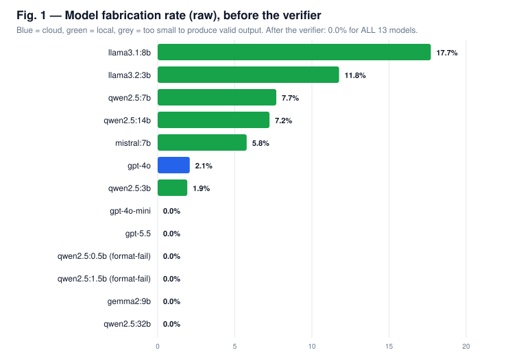
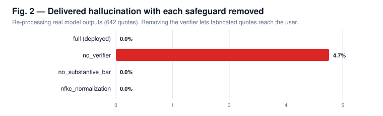
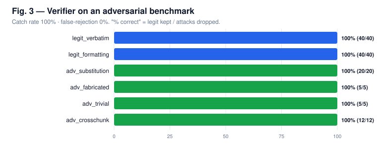
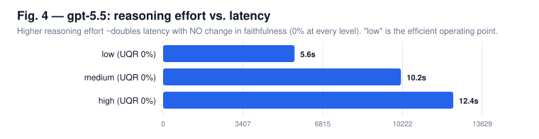

Experimental Figures
Grounding Generative AI in Authoritative Security Frameworks — real measured data.

Fabrication is family-driven, not size-driven; the verifier drives delivered fabrication to 0% for every model.

Without the verifier, 4.7% of delivered quotes are fabricated (up to 17.7% for the worst model); with it, 0%.

Catches 100% of crafted fabrications while never dropping a legitimate quote.

More reasoning buys latency/cost, not faithfulness, for verbatim grounding.